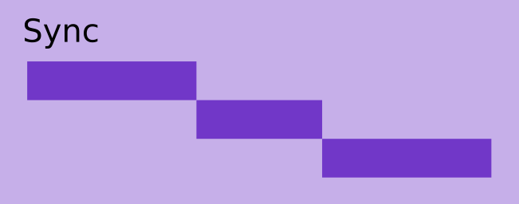
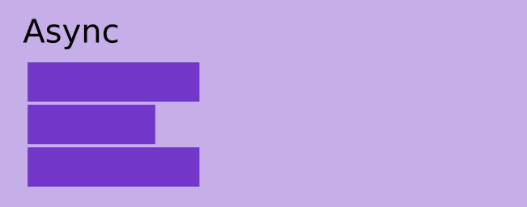

Python Web Frameworks
Quais são e como escolher!Bianca Rosa

dev @ stone
- Python
- Go
- JS
- PythOnRio / Gophers RJ
- Pyladies / Rails Girls RJ / WWG RJ
(alguns) frameworks web
- Django
- Flask
- Aiohttp
- Sanic
Django
- Estrutura do Projeto
- Como começar
- Persistência
- Performance
- Migrations
- App de Exemplo
Estrutura do Projeto
- models.py
- settings.py
- tests.py
- urls.py
- views.py

models.py
Classes de modelo, diretamente mapeadas para seus modelos de banco de dados.
Faz sentido quebrar em um pacote de modelos caso seu projeto cresça.
from django.db import models
from django.contrib.auth.models import User
from django import db
class Settings(db.models.Model):
COLORS = (
(1, 'red'),
(2, 'blue'),
(3, 'green')
)
user = models.OneToOneField(User, on_delete=models.CASCADE)
preferred_color = db.models.IntegerField(choices=COLORS)settings.py
Auto-gerado pelo startproject do Django, alterar conforme necessário.
DEBUG = True
ALLOWED_HOSTS = []
# Application definition
INSTALLED_APPS = [
'django.contrib.admin',
'django.contrib.auth',
'django.contrib.contenttypes',
'django.contrib.sessions',
'django.contrib.messages',
'django.contrib.staticfiles',
'dashboard_api',
'rest_framework',
]
MIDDLEWARE = [
'django.middleware.security.SecurityMiddleware',
'django.contrib.sessions.middleware.SessionMiddleware',
'django.middleware.common.CommonMiddleware',
'django.middleware.csrf.CsrfViewMiddleware',
'django.contrib.auth.middleware.AuthenticationMiddleware',
'django.contrib.messages.middleware.MessageMiddleware',
'django.middleware.clickjacking.XFrameOptionsMiddleware',
]
ROOT_URLCONF = 'dashboard_api.urls'
arquivo completo: https://github.com/biancarosa/django-dashboard-api/blob/master/dashboard_api/settings.py
tests.py
Entry point para seus testes.
Faz sentido quebrar em um pacote de testes quando seus testes crescerem.
from django.test import TestCase
# Create your tests here.urls.py
Mapeamento de URLs do Django.
"""dashboard_api URL Configuration"""
from django.conf.urls import url, include
from rest_framework import routers, viewsets
from dashboard_api.views.user import UserViewSet
from dashboard_api.views.settings import SettingsViewSet
router = routers.DefaultRouter()
router.register(r'users', UserViewSet)
router.register(r'settings', SettingsViewSet)
urlpatterns = [
url(r'^', include(router.urls)),
url(r'^api-auth/', include('rest_framework.urls', namespace='rest_framework'))
]views.py
Camada de apresentação dos seus modelos.
Também faz sentido virar um pacote junto com o de modelos.
from rest_framework import viewsets
from dashboard_api.models import Settings
from dashboard_api.serializers.settings import SettingsSerializer
class SettingsViewSet(viewsets.ModelViewSet):
queryset = Settings.objects.all()
serializer_class = SettingsSerializerComo começar
pip install django
django startproject myprojectPersistência
- ORM do próprio Django.
- Para trocar de banco de dados, basta alterar o settings.
- Funciona bem com bancos de dados relacionais.
Persistência - DBs não relacionais
Artigo sobre MongoEngine + DjangoPerformance
- Cuidado com ORMs :)
- Solving Performance Problems with Django ORM
Migrations
Gerencia mudanças no modelo, gerando arquivos de migração versionados.
App de Exemplo
django-dashboard-api* com django rest framework
Flask
- Estrutura do Projeto
- Como começar
- Blueprints
- Extensões
- Performance
- App de Exemplo
Estrutura do Projeto
hello.py
from flask import Flask
app = Flask(__name__)
@app.route("/")
def hello():
return "Hello World!"Como começar
pip install flask
export FLASK_APP=hello.py
flask runBlueprints
Diga tchau a arquivos gigantes de rota!
from flask import Flask
app = Flask(__name__)
from myapp.blueprints.my_blueprint
app.register_blueprint(app)Extensões
- Flask-Admin
- Flask-Cache
- Flask-Celery
- Flask-CORS
- Flask-SQLAlchemy
- e muito mais...
Performance
Depende bastante do que você coloca de extensões / dependências.
App de Exemplo
flask-dashboard-api* com flask restful
Aiohttp
- Async vs Sync
- Estrutura do Projeto
- Como começar
- App de Exemplo
Async vs Sync
 Estrutura do Projeto
web.py
from aiohttp import web
async def handle(request):
name = request.match_info.get('name', "Anonymous")
text = "Hello, " + name
return web.Response(text=text)
app = web.Application()
app.add_routes([web.get('/', handle),
web.get('/{name}', handle)])
web.run_app(app)Como começar
pip install aiohttp
python web.pyApp de Exemplo
aiohttp-dashboard-apiSanic
- Estrutura do Projeto
- Como começar
- Blueprints
- Extensões
- App de Exemplo
Estrutura do Projeto
hello.py
from sanic import Sanic
from sanic.response import json
app = Sanic()
@app.route("/")
async def test(request):
return json({"hello": "world"})
if __name__ == "__main__":
app.run(host="0.0.0.0", port=8000)Como começar
pip install sanic
python hello.pyBlueprints
from sanic import Sanic
from my_blueprint import bp
app = Sanic(__name__)
app.blueprint(bp)
app.run(host='0.0.0.0', port=8000, debug=True)Extensões
- Sanic-GraphQL
- Sanic-EnvConfig
- Sanic-Limiter
- Sanic-CORS
- Sanic-Transmute
- e muito mais...
Performance
Assim como o Flask, depende bastante do que você coloca de extensões / dependências.
Usa todo o poder do Python3 para executar código de forma assíncrona.
Usa o uvloop, uma implementação mais rápida do aioloop padrão.
Usa o httptools para serializar mais rapidamente.
App de Exemplo
sanic-dashboard-apioutros frameworks web
- CherryPy
- Web2Py
- web.py
- Rocket
- API Star
- Falcon
- Bottle
Mas como escolher?
Não existe bala de prata.
Critérios
Produtividade
O que é melhor pro seu time
Critérios
Performance
Entender se de fato é importante (mas nunca faz mal)
Critérios
Documentação
Quanto tempo você vai demorar pra achar uma resposta pro seu problema na documentação
Critérios
Comunidade
Tamanho da comunidade, quantas pessoas usam esse projeto ativamente
Follow your heart <3
twitter: @__biancarosa
slides: biancarosa.com.br/slides
tks :)